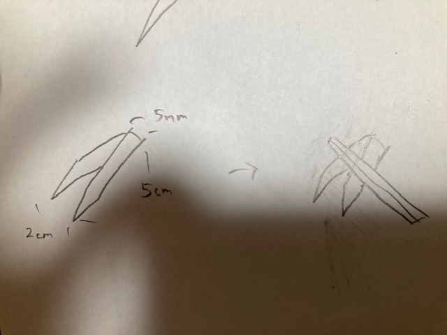
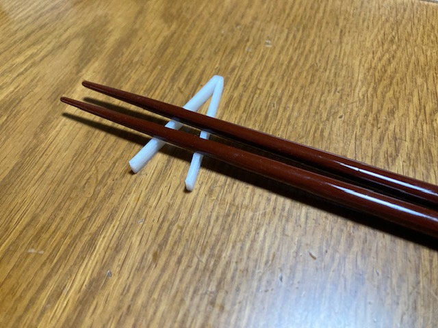

ピンセット兼箸置き
スケッチ

実際に作ってみた

箸を置いてみる

設計ファイル
ちゃんと置けました
作品の説明
ピンセットとしても、箸置きとしても使える面白いモノ
作ろうと思ったきっかけ
ピンセットというものは本来、無機質、冷たいイメージを持っている道具だと思っている人が大半だと思います。
そこで、そのようなピンセットが食卓に並んだら意外過ぎて面白いのではないかと思ったことが、作ったきっかけです。
制作過程の中で
箸置きというものは通常、半円型に窪んでいてその部分に箸を置くものですが、
今回の大きさ制限の中では1個の半円にするのは下の部分が薄くなりすぎるかもと思い、
2個ずづ箸にフィットするような小さい半円を作りました。
動画